SISTEMA DE GESTIÓN FARMACÉUTICA PARA LA RED DE FARMACIAS CHÁVEZ - BOLIVIA
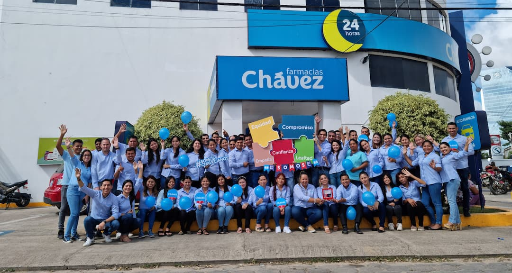
Farmacias Chávez es una de las cadenas farmacéuticas más importantes de Bolivia, con más de 100 sucursales distribuidas en varios departamentos del país y una amplia trayectoria en la comercialización de medicamentos y productos para la salud.
Este proyecto propone el análisis y diseño de un Sistema de Gestión que permita optimizar el control de inventarios, las ventas, la administración de medicamentos y la gestión de proveedores, mejorando la eficiencia operativa y la calidad del servicio al cliente.
Introducción
En la actualidad, los sistemas de información se han consolidado como herramientas estratégicas para optimizar la gestión de procesos en el sector farmacéutico. Las farmacias desempeñan un rol fundamental en la sociedad boliviana, siendo responsables de la distribución de medicamentos y productos de salud que requieren un manejo eficiente del inventario, las ventas y la atención al cliente. Farmacias Chávez, fundada en 1988 por Ana María Chávez en Santa Cruz de la Sierra, se ha posicionado como uno de los retailers farmacéuticos más importantes de Bolivia. Con más de 36 años de trayectoria, la cadena opera actualmente más de 100 sucursales distribuidas en seis departamentos del país: Santa Cruz, La Paz, Cochabamba, Tarija, Beni y Oruro, contando además con 2 Centros Médicos. A pesar de este crecimiento, la optimización de los sistemas de gestión interna se presenta como un desafío continuo en una empresa de tal envergadura. El presente proyecto tiene como objetivo el análisis y diseño de un Sistema de Gestión para Farmacias Chávez, que permita automatizar y optimizar los procesos principales: gestión de inventarios, registro de ventas, control de medicamentos y gestión de proveedores. El sistema será modelado bajo dos paradigmas complementarios: el Análisis Estructurado mediante Diagramas de Flujo de Datos (DFD) y el Análisis Orientado a Objetos mediante diagramas UML, aplicando los conocimientos adquiridos en la materia de Análisis y Diseño de Sistemas.
Antecedentes
Farmacias Chávez fue fundada en 1988 en Santa Cruz de la Sierra, Bolivia, por Ana María Chávez, como una farmacia local orientada a brindar medicamentos accesibles a la población boliviana. A lo largo de más de tres décadas, la empresa experimentó un crecimiento sostenido que la convirtió en uno de los retailers farmacéuticos líderes del país. Entre los hitos más relevantes de su trayectoria se destacan: en 2018, la incursión en el modelo de franquicias bajo la marca 'Santo Remedio'; en 2019, la conversión en la primera empresa farmacéutica boliviana en cotizar en la Bolsa Boliviana de Valores; y en 2020, la implementación del formato de 'auto-farmacias' en respuesta a las medidas de distanciamiento social durante la pandemia del COVID-19. La compañía también desarrolló un canal de comercio electrónico (online.farmaciachavez.com.bo) con servicio de delivery, y programas de fidelización como 'Lunes de Chávez' con descuentos del 7% para todos los clientes. En cuanto a reconocimientos, Farmacias Chávez ha sido certificada como 'Great Place to Work' en Bolivia en múltiples ocasiones (2023 y 2024), lo que refleja su compromiso con la gestión del talento humano. No obstante, el acelerado crecimiento de la cadena que pasó de ser una farmacia local a operar en catorce localidades de seis departamentos genera retos importantes en cuanto a la estandarización y automatización de sus procesos de gestión interna. A nivel del sector farmacéutico boliviano, persisten desafíos estructurales como el contrabando, la falsificación de medicamentos y la competencia informal, situaciones que el propio CEO de la compañía, Leonardo Salvatierra Chávez, ha señalado públicamente. Esto refuerza la necesidad de contar con sistemas de información robustos que permitan a la empresa mantener el control de su inventario, trazabilidad de productos y eficiencia operativa en toda su red de sucursales.
Planteamiento del Problema
Farmacias Chávez opera una red de más de 100 sucursales distribuidas en seis departamentos de Bolivia, atendiendo a miles de clientes diariamente. Sin embargo, la magnitud de esta operación plantea desafíos significativos en la gestión integrada de la información, especialmente en los procesos de control de inventario, registro de ventas y coordinación con proveedores. La ausencia o insuficiencia de un sistema de gestión unificado puede generar: pérdidas económicas por vencimiento de medicamentos que no son identificados a tiempo; desabastecimiento o sobrestock en sucursales específicas por falta de visibilidad en tiempo real del inventario consolidado; errores en el registro de ventas que afectan la facturación y el control financiero; demoras en la atención al cliente cuando no se cuenta con información actualizada sobre disponibilidad de productos; y dificultades en la toma de decisiones gerenciales por falta de reportes oportunos y confiables. Asimismo, la competencia desleal proveniente del contrabando y la falsificación de medicamentos —señalada por la propia empresa— exige contar con mecanismos de trazabilidad y control que permitan verificar la autenticidad y procedencia de los productos en stock.
Árbol del Problema
El siguiente árbol de problemas sintetiza las causas y consecuencias del problema central identificado:
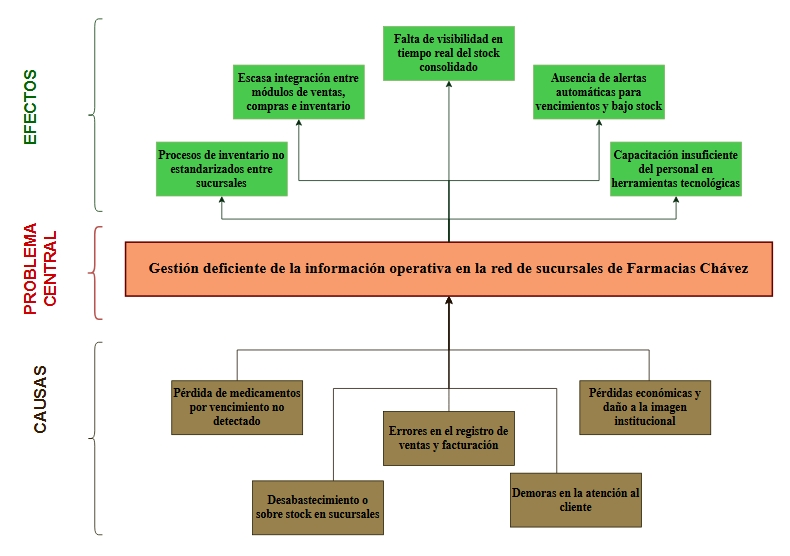
Figura: Árbol del Problema - Farmacias Chávez
Formulación del Problema
¿Cómo mejorar la gestión integrada de inventarios, ventas y control de medicamentos en la red de sucursales de Farmacias Chávez mediante el análisis y diseño de un sistema de información eficiente?
Propósito del Estudio
Objetivo General
Analizar y diseñar un Sistema de Gestión para Farmacias Chávez que permita optimizar el control de inventarios, el registro de ventas y los procesos operativos de sus sucursales, mejorando la eficiencia, la trazabilidad de productos y la calidad del servicio al cliente.
Objetivos Específicos
- Analizar y estandarizar los procesos de gestión de inventario entre las diferentes sucursales de Farmacias Chávez.
- Diseñar un sistema integrado que permita la comunicación eficiente entre los módulos de ventas, compras e inventario.
- Implementar mecanismos de consulta y monitoreo en tiempo real del stock consolidado de medicamentos y productos farmacéuticos.
- Diseñar funcionalidades automáticas de alertas para el control de productos próximos a vencer y niveles bajos de stock.
- Proponer estrategias de capacitación tecnológica para el personal encargado del uso del sistema de gestión farmacéutica.
Método, medios e instrumentos de investigación
El presente proyecto se desarrollará bajo un enfoque mixto, combinando el método analítico-descriptivo para el estudio de los procesos actuales de la farmacia, y el método de modelado sistemático para la propuesta de diseño del sistema.
Métodos:
Método analítico-descriptivo: para identificar y describir los procesos operativos actuales.
Método de modelado: para representar gráficamente el sistema mediante DFD y UML.
Método inductivo: para, a partir del análisis de casos particulares, proponer soluciones generalizables.
Medios:
Computadora con acceso a internet.
Software de modelado: Draw.io / Lucidchart (DFD, UML, Gantt).
Suite ofimática para redacción del informe.
Sitio web / Blog para publicación incremental del proyecto.
Instrumentos de recolección de información:
Observación directa de los procesos en sucursales de Farmacias Chávez.
Entrevistas estructuradas al personal (farmacéutico regente, cajeros, administrador).
Revisión documental de manuales de procesos, reportes de ventas e inventario.
Consulta del sitio web oficial (farmaciaschavez.com.bo) y redes sociales corporativas.
Justificación:
El desarrollo de este sistema se justifica por la necesidad de optimizar la gestión operativa de una cadena farmacéutica con más de 100 sucursales en Bolivia. La implementación de un sistema integrado permitirá reducir pérdidas por vencimiento, eliminar errores en ventas, mejorar la atención al cliente y facilitar la toma de decisiones gerenciales con información en tiempo real.
Alcance:
El proyecto abarcará el análisis y diseño del sistema de gestión, sin incluir la implementación completa del software. Se enfocará en los módulos de: Gestión de Inventario, Registro de Ventas, Gestión de Compras y Proveedores, y Control de Medicamentos (fechas de vencimiento, alertas). El alcance geográfico de referencia es la operación nacional de Farmacias Chávez en Bolivia.
Planificación de Actividades
El proyecto se desarrollará en cuatro fases distribuidas a lo largo de cuatro semanas, culminando con la entrega impresa y defensa el 08 de junio de 2026.
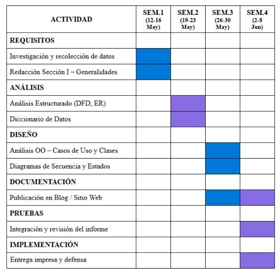
Figura: Cronograma de Actividades - Diagrama de Gantt
Declaración de Propósitos
Realizar un sistema de ventas para la farmacia Farmacia Chávez bajo el modelo ambiental, que permita registrar los datos de las ventas realizadas en la farmacia, controlar el inventario de medicamentos y productos farmacéuticos, así como llevar el seguimiento de la cantidad de productos disponibles dentro del negocio.
Diagrama de Contexto
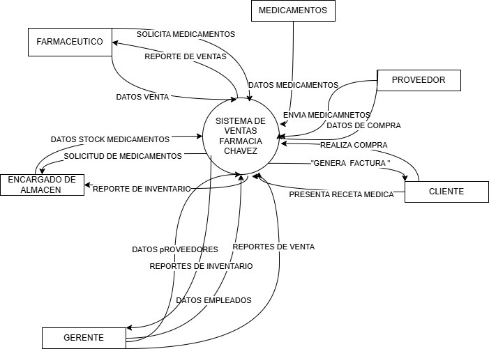
Lista de Acontecimientos
- Reportes farmacia: Una farmacia se conforma principalmente de un almacén y el área de ventas. Los reportes permiten conocer la cantidad de medicamentos y productos farmacéuticos disponibles, además de identificar cuáles están agotados o próximos a agotarse.
- Datos medicamentos: Cada medicamento o producto farmacéutico puede interactuar con el sistema mediante código de barras para cargar información como nombre, precio, fecha de vencimiento y cantidad disponible.
- Datos compra medicamentos: El gerente registra las compras de medicamentos y productos farmacéuticos que ingresarán al almacén, permitiendo generar reportes de inventario.
- Solicitud de medicamentos: Cuando el stock está agotado o próximo a agotarse, se genera una solicitud para abastecer nuevamente la farmacia.
- Datos stock medicamentos: El encargado de almacén podrá actualizar información sobre el stock y corregir discrepancias encontradas en inventario.
- Datos farmacéutico/vendedor: El gerente registrará farmacéuticos y vendedores para que puedan acceder al sistema y realizar ventas.
- Datos proveedor: El sistema almacenará información sobre proveedores, compras realizadas, facturas y fechas de entrega.
Diagrama de Flujo por niveles
Nivel 0
Nivel 1
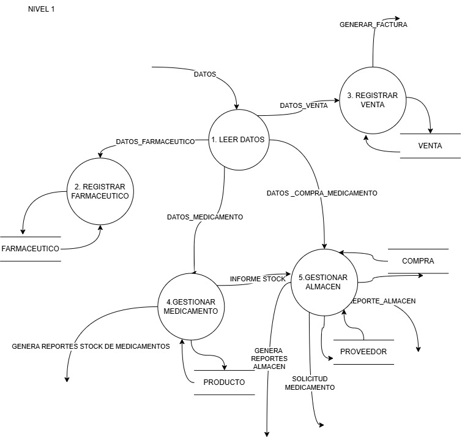
Nivel 2
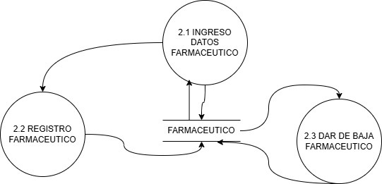
Nivel 3
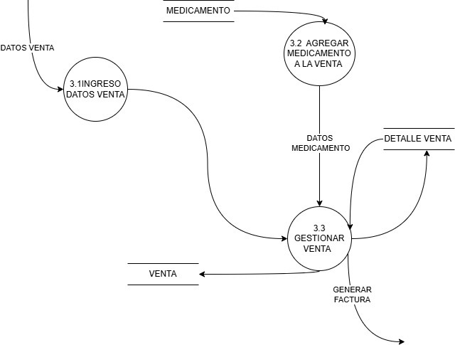
Nivel 4
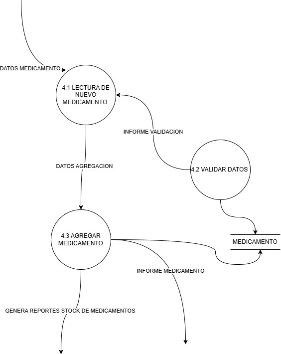
Nivel 5
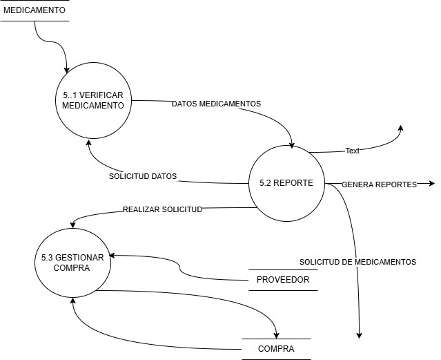
Diagrama Entidad Relación
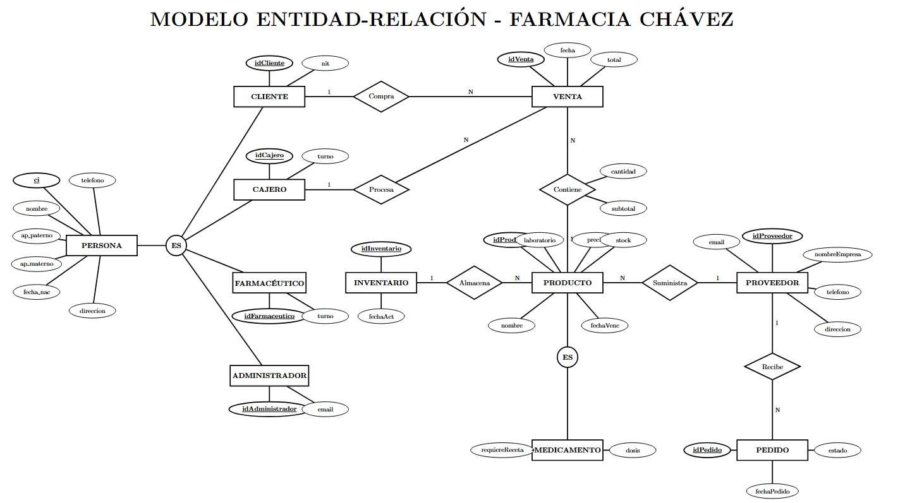
Diagrama de Clases
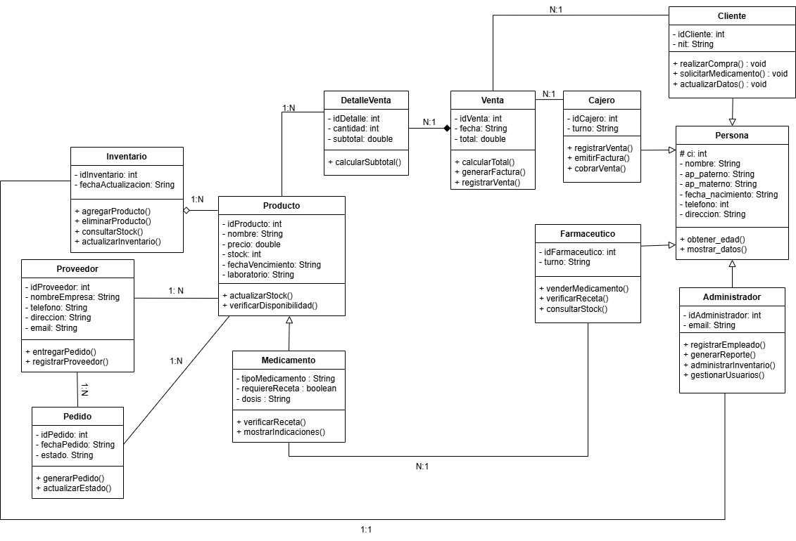
Diagrama de Procesos
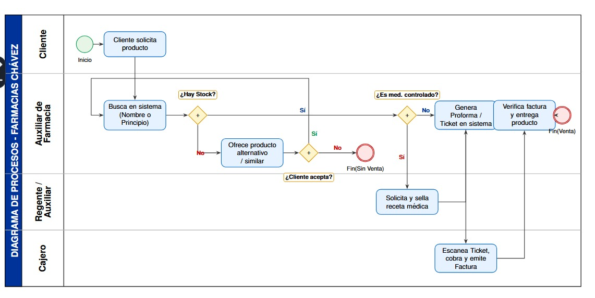
Casos de Uso
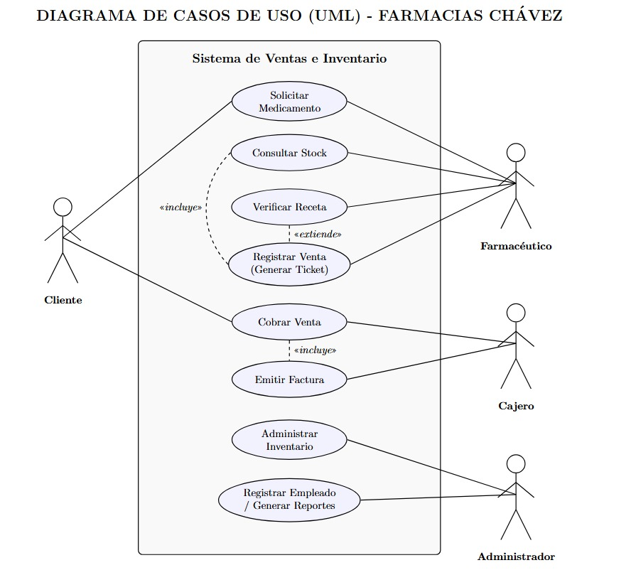
Casos de Uso de Negocio
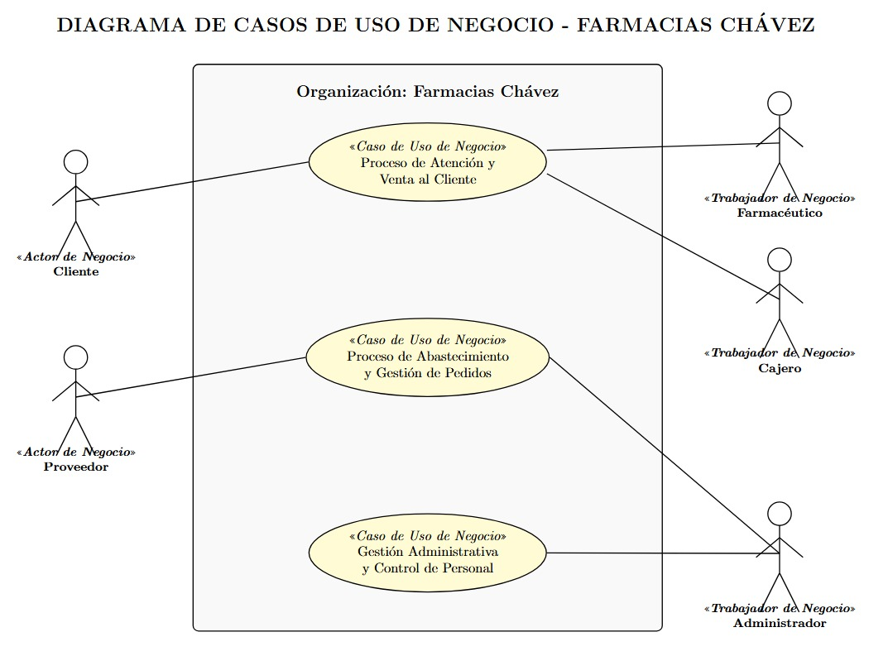
Casos de Uso Expandido
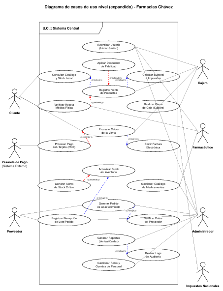
Videos
Próximamente material audiovisual.
Integrantes
Contáctanos
En Farmacia Chávez nos esforzamos por brindar una atención rápida, segura y confiable a nuestros clientes. Nuestro sistema de gestión farmacéutica busca optimizar el control de medicamentos, ventas e inventario, permitiendo mejorar la calidad del servicio y la administración de la farmacia.
Horarios de Atención
Lunes – Viernes: 08:00 AM – 10:00 PM
Sábado: 09:00 AM – 09:00 PM
Domingo: 09:00 AM – 06:00 PM